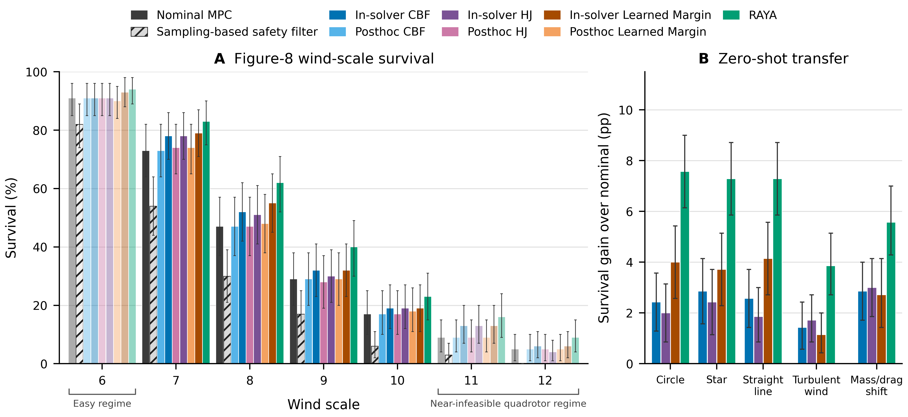
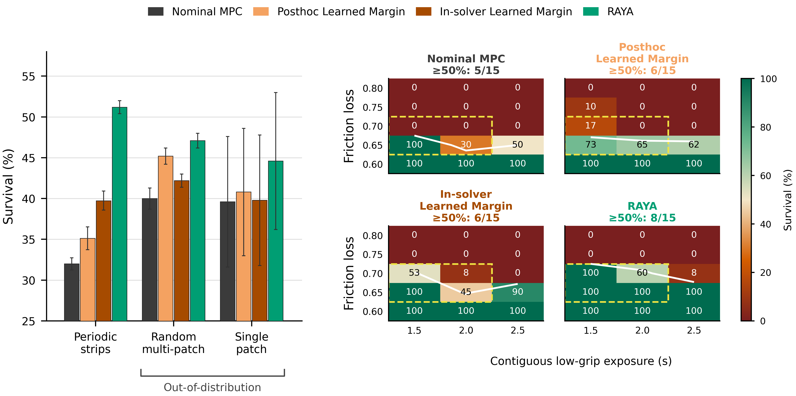
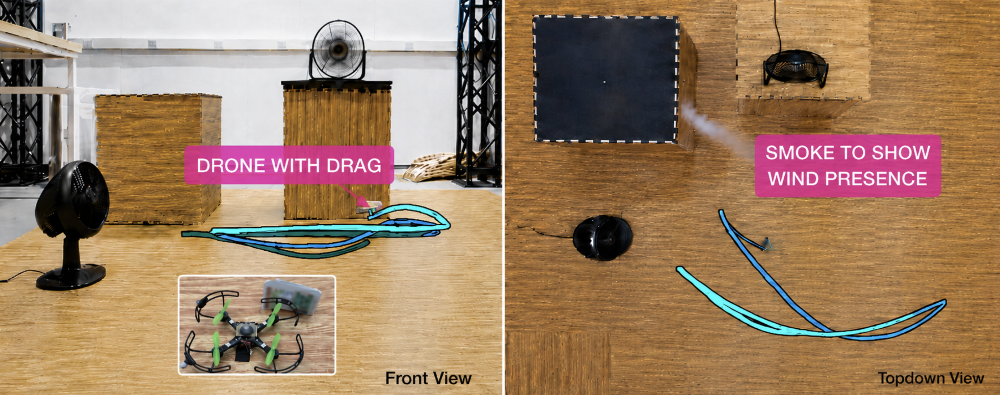

A robot can predict failure and still be unable to prevent it. A nominal plan can consume the control authority required for recovery, while fixed tracking priorities prevent the controller from using the options that remain. RAYA addresses both decisions within a single optimal controller.
Abstract
A robot can predict failure and still be unable to prevent it. By the time a safety mechanism reacts, the nominal plan may already have spent the control authority that recovery requires, and fixed task priorities may block whatever response remains. Our key insight is that both aspects are decided inside the controller. Recoverability must inform actions while they are chosen rather than veto them afterward, and task objectives must be adapted as recoverability shrinks. Building on this, we present RAYA, a hybrid learned–analytic framework that places a learned finite-horizon recoverability margin inside an optimal controller with hard constraints and pairs it with a bounded learned scheduler that shifts task weights to facilitate recovery. Across 7,200 simulation episodes per controller spanning quadrotor and autonomous-vehicle benchmarks, RAYA not only improves survival rates, but also transfers the learned components zero-shot to unseen trajectories, disturbances, plant shifts, and friction layouts. We developed an embedded realization of RAYA and deployed it onboard a 35g Crazyflie quadrotor. Across 40 combined hardware flights under wind with either aerodynamic mismatch or an unmodeled 40% motor-command loss, each of three baselines fails in all trials, while RAYA completes 10/10 six-cycle missions. Code and artifacts are open-sourced.
Recoverability-Aware Yielding of Authority
Where: inside the optimizer
A learned finite-horizon recoverability margin is locally linearized and incorporated into the model predictive control problem. Recovery information shapes the predicted trajectory while the current action is selected.
When: as recoverability shrinks
A bounded learned scheduler reweights selected task objectives. Lateral tracking may yield on the quadrotor; position and speed tracking may yield on the car. The optimizer retains its pre-existing hard constraints.
Interactive Experiments
Increase the disturbance to explore how control authority is lost. Compare nominal MPC, post hoc intervention, in-solver recoverability, and RAYA on quadrotor and autonomous-vehicle tasks.
ILLUSTRATIVE DEMO
Downward gusts · shared across controllers
/ 100Building pressure
↳
An explanatory animation, not a physics simulation or replay. Robot counts and failure thresholds are illustrative; they are not measured survival rates. At extreme disturbance, every method—including RAYA—can fail. See the actual experiments below.
Simulation Results
We evaluate 7,200 simulation episodes per controller: 4,200 quadrotor episodes and 3,000 autonomous-vehicle episodes. Learned components remain fixed during evaluation, including zero-shot tests on unseen trajectories, disturbance processes, plant shifts, and friction layouts.


In-solver integration and objective reallocation
Aggregate survival over all evaluated conditions is reported below. These measured results are independent of the illustrative disturbance slider.
| Method | Quadrotor | AV |
|---|---|---|
| Nominal MPC | 34.24 | 35.93 |
| Post hoc Learned Margin | 34.45 | 39.43 |
| In-solver Learned Margin | 37.48 | 40.57 |
| RAYA | 40.83 | 48.73 |
Embedded Hardware Experiments
RAYA runs fully onboard the STM32F405 microcontroller of a 35 g Crazyflie quadrotor at 20 Hz. Each controller is tested in five flights under each of two conditions: a 3 g attachment with wind, and an unmodeled 40% front-left motor-command loss with wind.

| Method | 3 g attachment + wind | 40% M1 loss + wind |
|---|---|---|
| Nominal MPC | 0 / 5 | 0 / 5 |
| In-solver CBF | 0 / 5 | 0 / 5 |
| Post hoc Learned Margin | 0 / 5 | 0 / 5 |
| RAYA | 5 / 5 | 5 / 5 |
One RAYA motor-loss flight contacted the floor, recovered, completed the remaining trajectory, and landed under control. Mission completion under motor loss is 5/5, with 4/5 flights completed without contact. The worst observed RAYA control-step latency is 44.52 ms, within the 50 ms onboard deadline.
Acknowledgments
This project was supported by the National Science Foundation (Awards 2411369, 2535096). Any opinions, findings, conclusions, or recommendations expressed in this material are those of the authors and do not necessarily reflect those of the funding organizations.